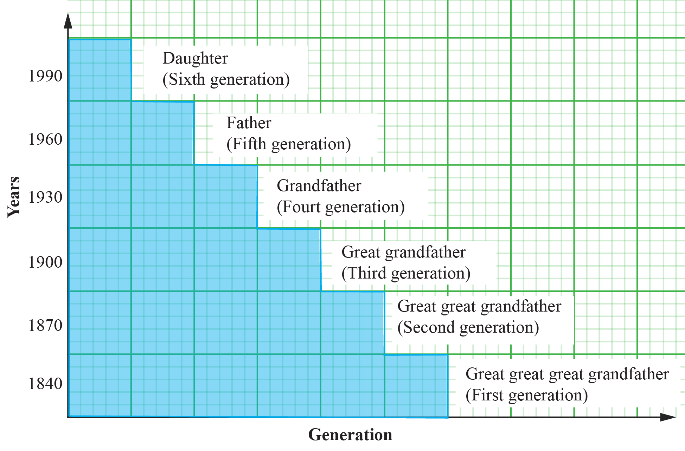

Potassium-argon: Archaeological materials can be dated using another scientific method known as Potassium-argon. This technique dates archaeological remains associated with inorganic materials, particularly volcanic rocks or ash, that were formed millions of years ago.
Ordering historical events
Historians use illustrations such as timelines, time graphs, family trees, and time charts to show how historical events followed each other. Figures 1.1, 1.2, 1.3 and 1.4 indicate timelines, time graphs, family tree, and time charts, respectively.
BCE
2000
1500
1000
500
0
500
1000
1500
2000
CE
Spread of Agriculture
Spread of Pastorialism
Birth of Christ
Birth of Muhammad
Portuguese invasion
German colonization
Figure 1.1: Timeline
